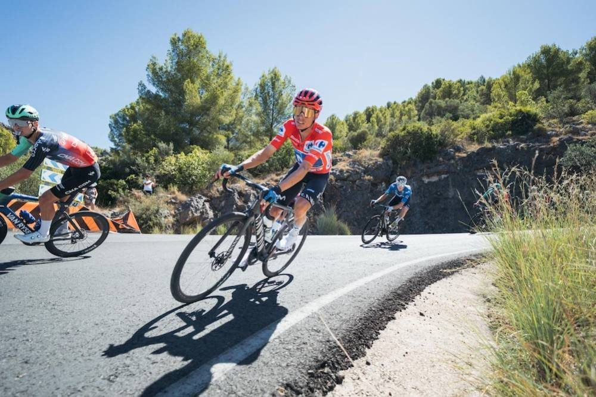
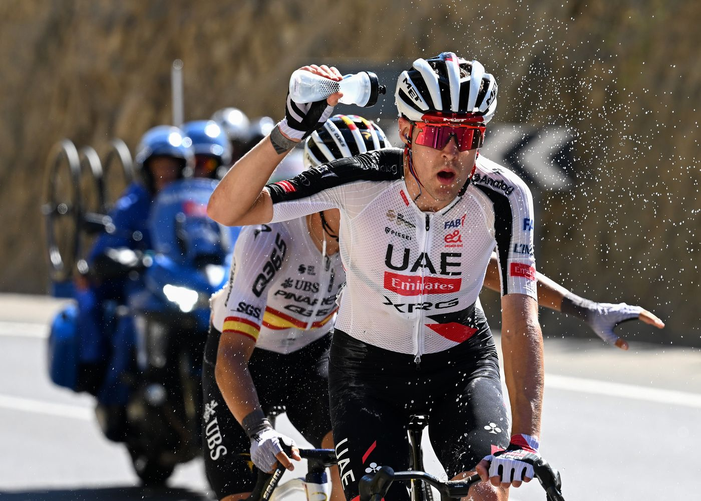

Facts
Stage 9, Sun 30 Aug: Villajoyosa → Alto de Aitana, 187.4 km, six climbs, finish 22 km at 5.8%. Winner Enric Mas (Movistar) 5:10:40. 2. Oscar Onley s.t. 3. Primož Roglič +12. 4. Felix Gall +18. 5. Cristian Rodríguez +20.
Red Mas 28:34:03. Roglič +1:18. Gall +1:39. Onley +2:20 (white). Green van Aert 124. Polka Buitrago 29. Team Decathlon CMA CGM. Combativity Sivakov. DNF: Pablo Torres (UAE), Victor Langellotti, Kaden Groves. Today is the rest day. Stage 10 Tue 1 Sep: Alcaraz → Elche de la Sierra, 184 km, three cat. 3s.
Tale of the tape
The first mountain day without Pogačar was supposed to shuffle the race. Movistar actually rode like a team in red. Decathlon cooked the last 22 km for Gall. Sivakov hung on until 4 km. Mas punched at 3, only Onley could follow, and Mas still had the sprint. 38.5°C on the way in. Nobody inherited anything up there.
Red is no longer a hospital jersey. Ten bonus for Mas, twelve seconds gone for Roglič on the road, Kuss cracked with 8 km left and dropped to 7th. Buitrago raided the dots. Then they sleep. Tuesday is breakaway bait.

Mas, first win in red, second Vuelta stage
31 Aug 2026
Stage 9, Sun 30 Aug: Villajoyosa → Alto de Aitana, 187.4 km. Attack at 3 km, only Onley could live with it, uphill sprint. Mas 5:10:40, 10 bonus. Onley same time. Roglič +12. Gall +18. Cristian Rodríguez +20. Movistar’s first home Grand Tour stage in five years. Eight-year drought for Mas in a Grand Tour, gone.
Open the piece

GC after Aitana: Mas, then a real race
31 Aug 2026
Red: Enric Mas 28:34:03. Roglič +1:18. Gall +1:39. Onley +2:20 (white). Carapaz +3:26. Skjelmose +3:55. Kuss +4:09 after 1:44 on the stage. Green van Aert (124). Polka Buitrago (29). Team Decathlon CMA CGM. Rest day today. Stage 10 Tue: Alcaraz → Elche de la Sierra, 184 km, three cat. 3s.
Open the piece

Sivakov almost, then three more DNFs
31 Aug 2026
38.5°C. Feeding extended to 10 km. Sivakov went solo at 10 km, Camprubí then gone, caught at 4 km. Combativity anyway. UAE also lost Pablo Torres. Langellotti and Groves out too. Buitrago took the mountains jersey from the break. Romele attacked on his birthday and still got dragged back.
Open the piece